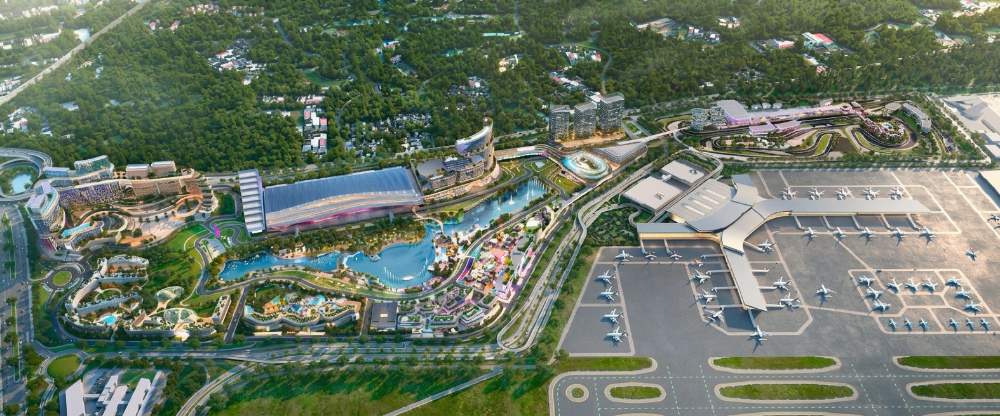

Master Strategy: Data Center Site Selection & Infrastructure Planning
Airport Core DCs (DC1 + DC2)
640 kW Total Power (8 kW / Rack)
Smart City DC (Main + Edge E1-E9)
152 - 216 kW Total Power (8 kW / Rack)
Total Project Capacity
792 - 856 kW Total Power (8 kW / Rack)
Geo-DR Site (Off-Site)
Async Replication Backup
คลิกที่หมุดบนภาพเพื่อดูรายละเอียดการจัดวางระบบแต่ละจุด

ตำแหน่งในภาพ: บริเวณด้านหน้าอาคารผู้โดยสารหลัก (Passenger Terminal Building)
หน้าที่ระบบ: รองรับระบบปฏิบัติการการบินวิกฤต (Critical Flight Operations) เช่น Check-in, Immigration, สายพานสัมภาระ (BHS) และระบบสารสนเทศเที่ยวบิน (FIDS)
ตารางวิเคราะห์และสรุปข้อกำหนดทางวิศวกรรมสถาปัตยกรรมศูนย์ข้อมูลและพื้นที่ใช้งาน 12 หัวข้อหลัก
| หัวข้อ / รายละเอียด | DC-A (Airport Core DCs: DC1 + DC2) | DC-B (Smart City DCs: Main DC + Edge E1-E9) |
|---|---|---|
|
1. กลุ่มเป้าหมายและการรองรับ
|
รองรับผู้โดยสาร 60 ล้านคน/ปี สำหรับระบบงานวิกฤต (Critical Systems): เช็คอิน, ตรวจคนเข้าเมือง (Immigration), สายพานสัมภาระ (BHS) และการบริหารจัดการน่านฟ้า |
รองรับพื้นที่เชิงพาณิชย์ & โรงแรม 4,800 ห้อง สำหรับระบบ Smart Building, CCTV AI, Wi-Fi ทั่วโครงการ, ระบบ Billing และ IoT โซนพาณิชย์ |
|
2. สถาปัตยกรรมระบบ
|
Airport Dual DCs (DC1 + DC2) ทำงานแบบ Active-Active Synchronous ห่างกันทางกายภาพ ป้องกันอุบัติภัยเดี่ยว (Single Point of Failure) |
1 Main DC (DC) + 9 Edge DCs (E1-E9) สถาปัตยกรรมกระจายศูนย์ Main DC ประจำ MICE Center และ Edge DCs ตามโซนต่างๆ |
|
3. จำนวนแร็ค (Racks)
|
~80 แร็ค (DC1: 40 Racks / DC2: 40 Racks) รองรับ Server, High-Performance Storage, Dual Core Network และ Security Engines Full Redundancy |
19 - 27 แร็ค (รวมทั้งโครงการ) • Main Smart City DC: 10 - 12 แร็ค • Edge Nodes (E1-E9): โซนละ 1 - 2 แร็ค |
|
4. พื้นที่ห้องเซิร์ฟเวอร์ (White Space)
|
320 - 400 ตารางเมตร คำนวณจาก DC1 (160-200 ตร.ม.) + DC2 (160-200 ตร.ม.) |
75 - 110 ตารางเมตร นับรวมพื้นที่ห้องศูนย์กลาง Smart City DC และห้อง Edge (E1-E9) ทุกจุด |
|
5. พื้นที่อาคารรวม (Total Area)
|
800 - 1,000 ตารางเมตร รวม 2 อาคาร (อาคารละ 400-500 ตร.ม.) รวมห้อง UPS, แบตเตอรี่, CRAC และระบบความปลอดภัย |
190 - 280 ตารางเมตร รวมพื้นที่สนับสนุนวิศวกรรมของ Main DC และตู้ Micro DC ประจำโซน E1-E9 |
|
6. Electrical Systems & UPS
|
Modular UPS (2N / Tier IV Fault Tolerant), Battery Bank, Generator สองชุดแยกอิสระทั้งสองอาคาร | Modular UPS (N+1) สำหรับ Main DC และ Smart UPS สำรองไฟประจำตู้ Edge Micro DC |
|
7. Cooling Systems
|
Precision Cooling (Chilled Water/InRow CRAC) ควบคุมความชื้น อุณหภูมิแม่นยำ 24x7 N+2 Redundancy | Precision Air conditioning สำหรับ Main DC และ Rack-Level InRow/Direct Cooling สำหรับ Edge Nodes |
|
8. กำลังไฟฟ้า (Power Capacity)
|
640 kW Total Power • Power Density: 8 kW / Rack • รองรับระบบ High-Density Compute & Mission-Critical Workloads |
152 - 216 kW Total Power • Power Density: 8 kW / Rack • Main DC: 80 - 96 kW • Edge Nodes (E1-E9): 8 - 16 kW ต่อ Micro DC Node |
|
9. การรองรับน้ำหนักพื้น (Structural Load / Weight)
|
1,200 - 1,500 kg/ตร.ม. (Raised Floor) ออกแบบโครงสร้างรองรับน้ำหนัก UPS, แบตเตอรี่ Lead-Acid/Lithium และ Server Racks แบบ Heavy-Duty |
800 - 1,000 kg/ตร.ม. สำหรับพื้นที่ Main DC และติดตั้งบนพื้นโครงสร้างอาคารมาตรฐาน/ตู้ยกสูงสำหรับ Edge Nodes |
|
10. Network & Fiber Connectivity
|
Dual Diverse Fiber Ring เชื่อมระหว่าง DC1 & DC2 และตรงสู่ระบบควบคุมการบินด้วยแนวท่อใต้ดินคนละทิศทาง | Fiber Optic Ring Backbone เชื่อมจาก Smart City Main DC กระจายไปยัง Edge Nodes (E1-E9) |
|
11. Fire Protection & Security
|
ระบบดับเพลิงสารสะอาด NOVEC 1230/FM200, VESDA, Biometric Access Control เข็มงวดระดับการบินสากล | ระบบดับเพลิงสารสะอาดเฉพาะห้อง Main DC และตู้ดับเพลิงอัตโนมัติในตู้ Edge Rack สำเร็จรูป |
|
12. หมายเหตุสัดส่วนพื้นที่
|
พื้นที่รวมอาคาร (Total Area) มีขนาดเป็น 2.5 เท่า ของพื้นที่ห้องเซิร์ฟเวอร์ (White Space) เนื่องจากต้องเผื่อพื้นที่สำหรับเครื่องสำรองไฟฟ้า (UPS), แบตเตอรี่, ระบบปรับอากาศควบคุมความชื้น (CRAC/CRAH), และระบบดับเพลิงอัตโนมัติ ตามมาตรฐานสากล TIA-942 |
|